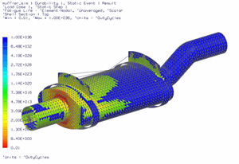

显示疲劳寿命结果
 仿真导航器
仿真导航器
-
.gif) 静态事件 1(结果节点)
静态事件 1(结果节点) -
 后处理导航器
后处理导航器 -

 静态事件 1(展开)
静态事件 1(展开) 将在后处理导航器中创建下列结果节点：

 耐久性 1
耐久性 1

 耐久性 1
耐久性 1


 静态事件 1
静态事件 1

 疲劳寿命 – 单元节点
疲劳损伤 – 单元节点
疲劳安全因子 – 单元节点
强度安全因子 – 单元节点
安全裕度 (%) – 单元节点
疲劳寿命 – 单元节点
疲劳损伤 – 单元节点
疲劳安全因子 – 单元节点
强度安全因子 – 单元节点
安全裕度 (%) – 单元节点
 疲劳失效指数 – 单元节点
疲劳失效指数 – 单元节点

 瞬态事件 1
瞬态事件 1
可以使用下表来指导耐久性结果的评估：
耐久性结果集
当值为( )时失效
强度安全因子
< 1.0
安全裕度
Negative
疲劳安全因子
< 1.0
疲劳失效指数
> 1.0
疲劳损伤
> 1.0
疲劳寿命
< 1.0
-
.gif) 疲劳寿命 – 单元节点
疲劳寿命 – 单元节点
-
您需要改变颜色条范围以获得更有意义的疲劳寿命结果表示。
 编辑后处理视图(后处理工具条)
编辑后处理视图(后处理工具条) -
图例
-

反转范围
(范围行)
-
确定
后处理视图对话框
-

-
后处理视图 3
-
 新建模板 瞬态事件 1，位于耐久性 1节点下方
新建模板 瞬态事件 1，位于耐久性 1节点下方瞬态事件 1将显示在后处理导航器中。
瞬态事件 1 -
 瞬态事件 1(展开)
瞬态事件 1(展开) -
疲劳寿命 – 单元节点 Post_View_3，位于模板节点下方
-
瞬态事件 1结果集的耐久性结果将只计算在 Joint 组中的单元结果。
-
后处理导航器 耐久性 1
耐久性 1结果将显示在后处理导航器中。
耐久性 1 - 耐久性 1(展开)
-
疲劳寿命 – 单元节点 Post_View_3，位于模板节点下方
注意到对于各个结果集，有些区域的疲劳寿命结果小于1，因此，需要进一步的分析和设计变更。